Monoporzioni
Il dolce
giusto per uno.
Mousse, tartellette, bignè e dolci al cucchiaio: la pasticceria del banco in formato singolo, da portare via o da servire a fine pranzo senza dover tagliare niente.
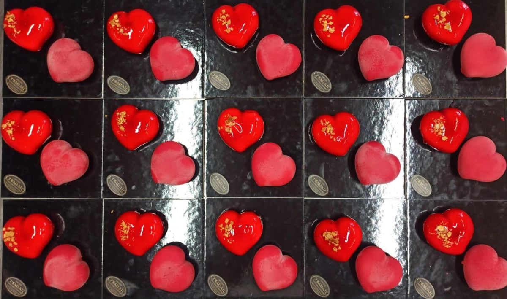
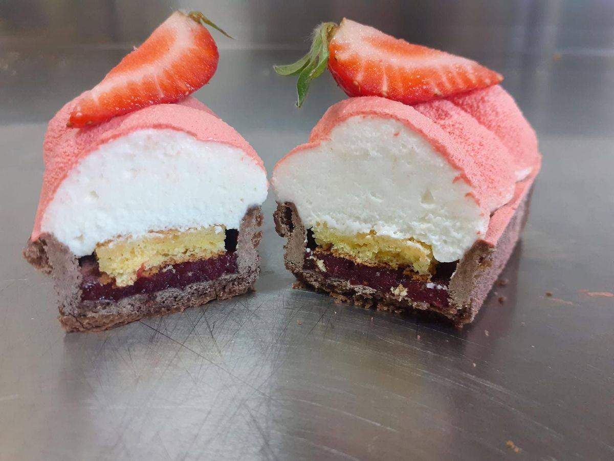
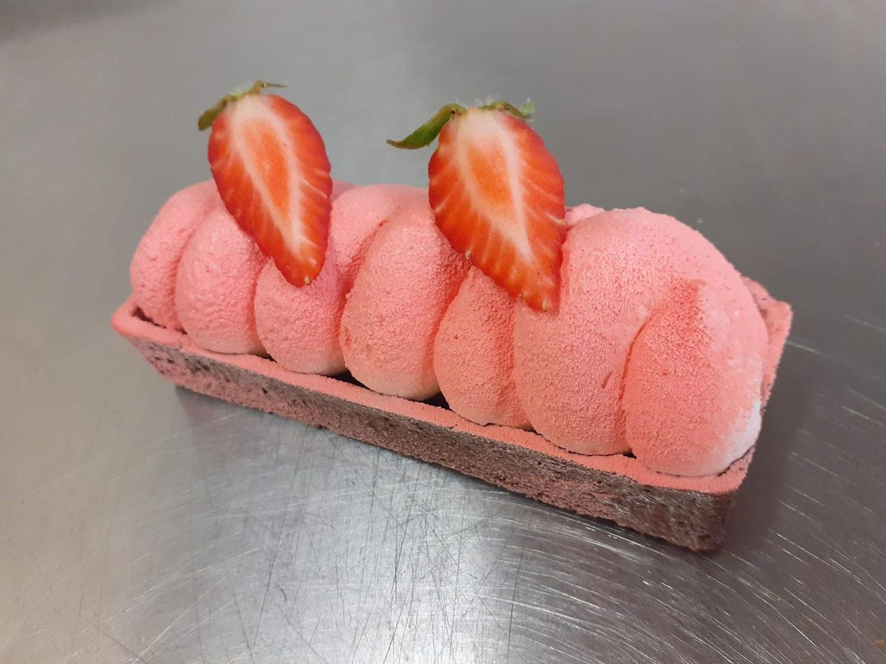
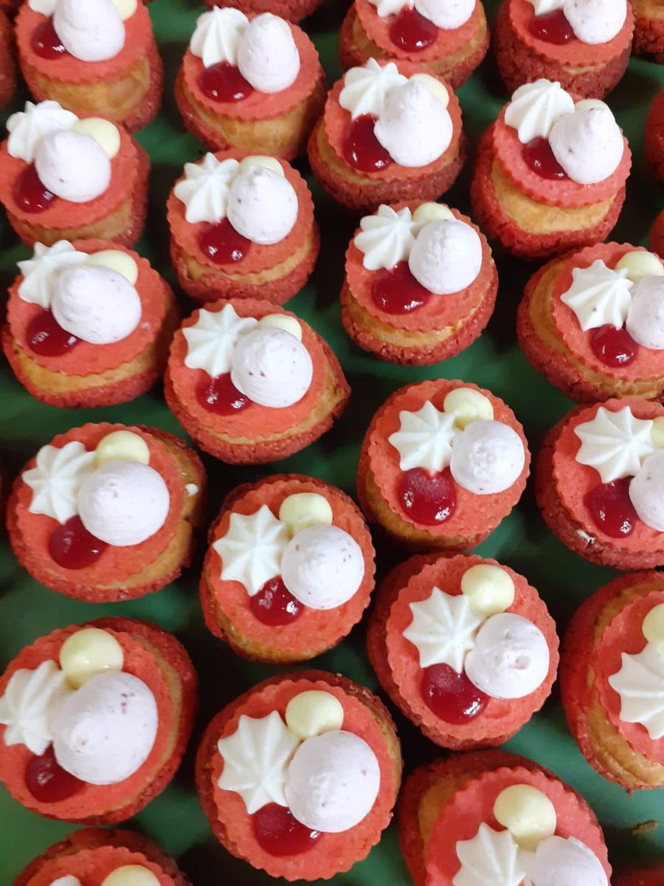
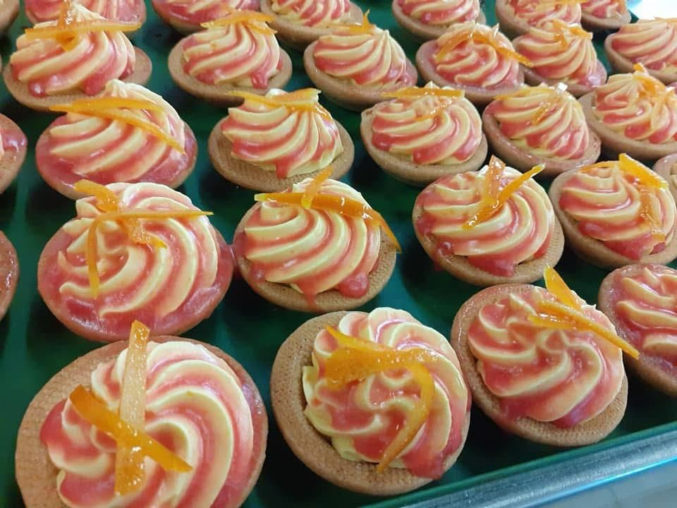
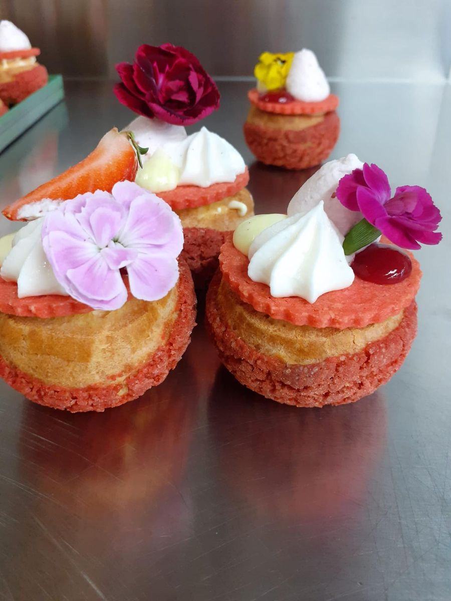
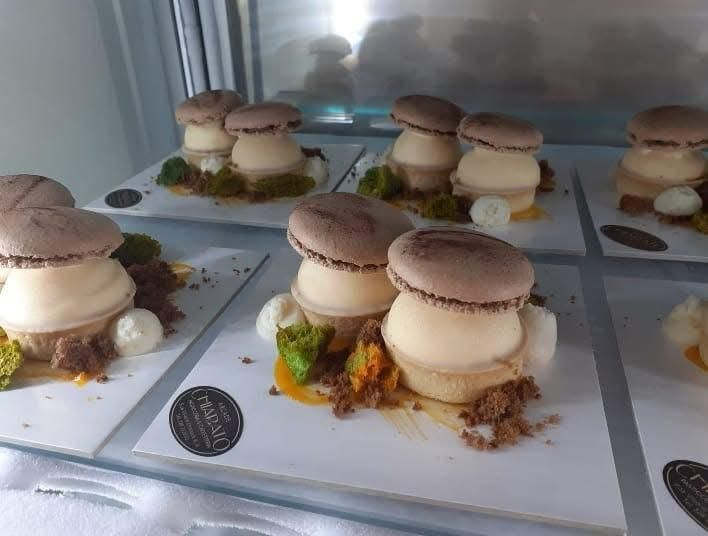
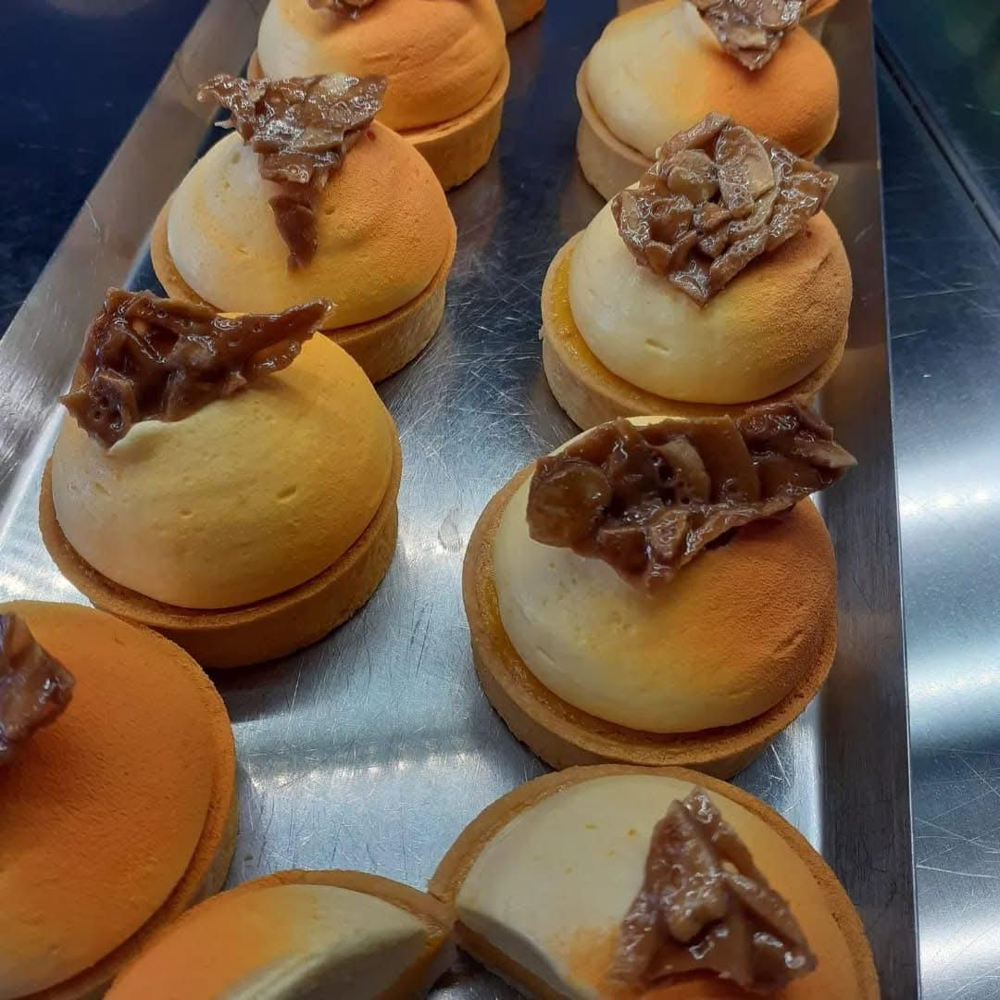
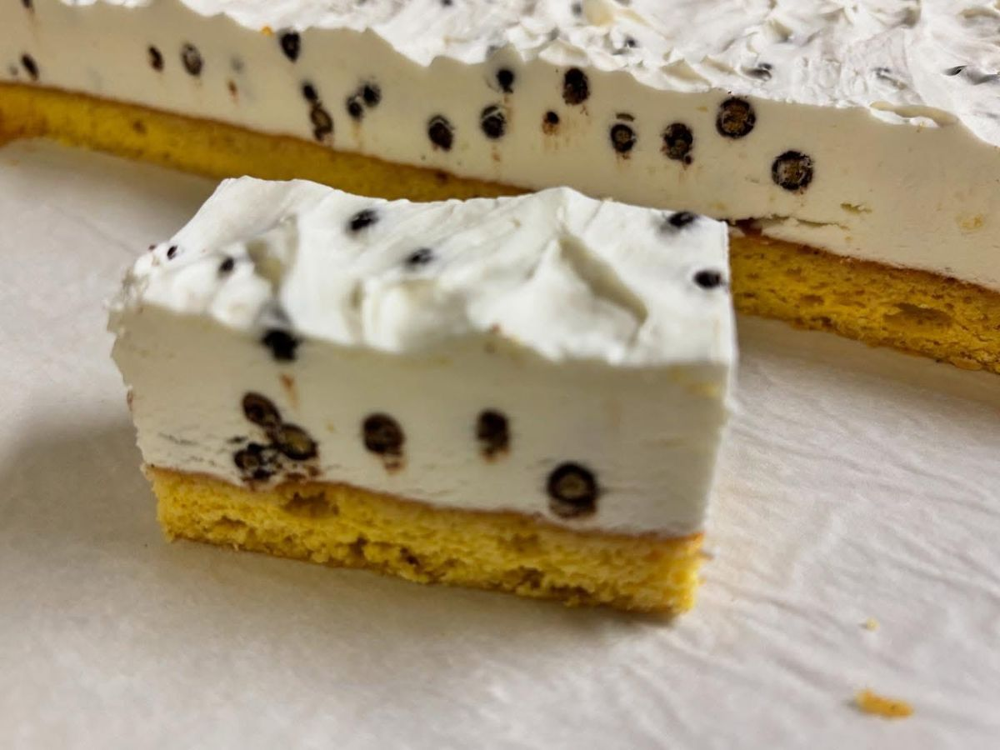
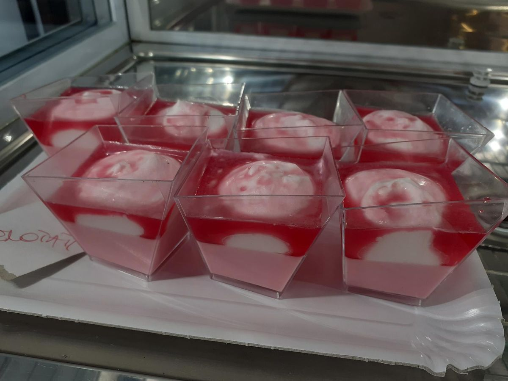
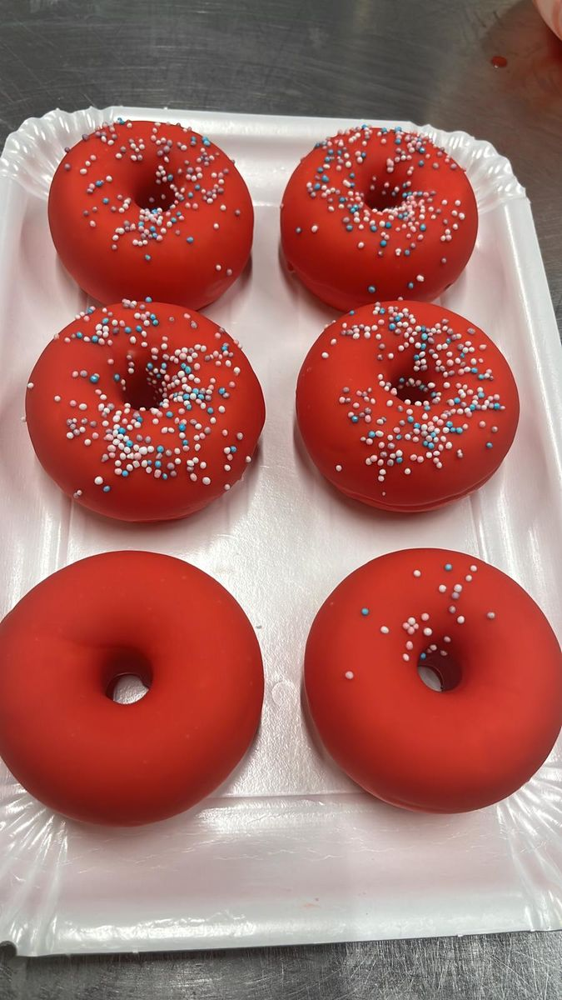
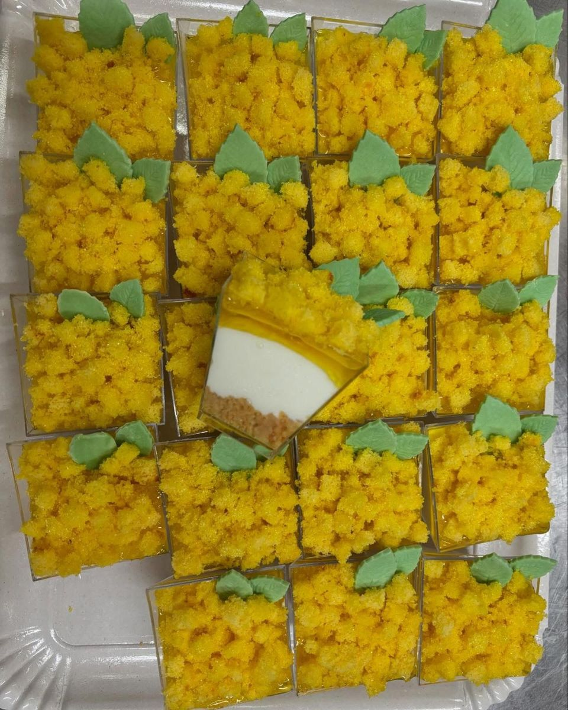
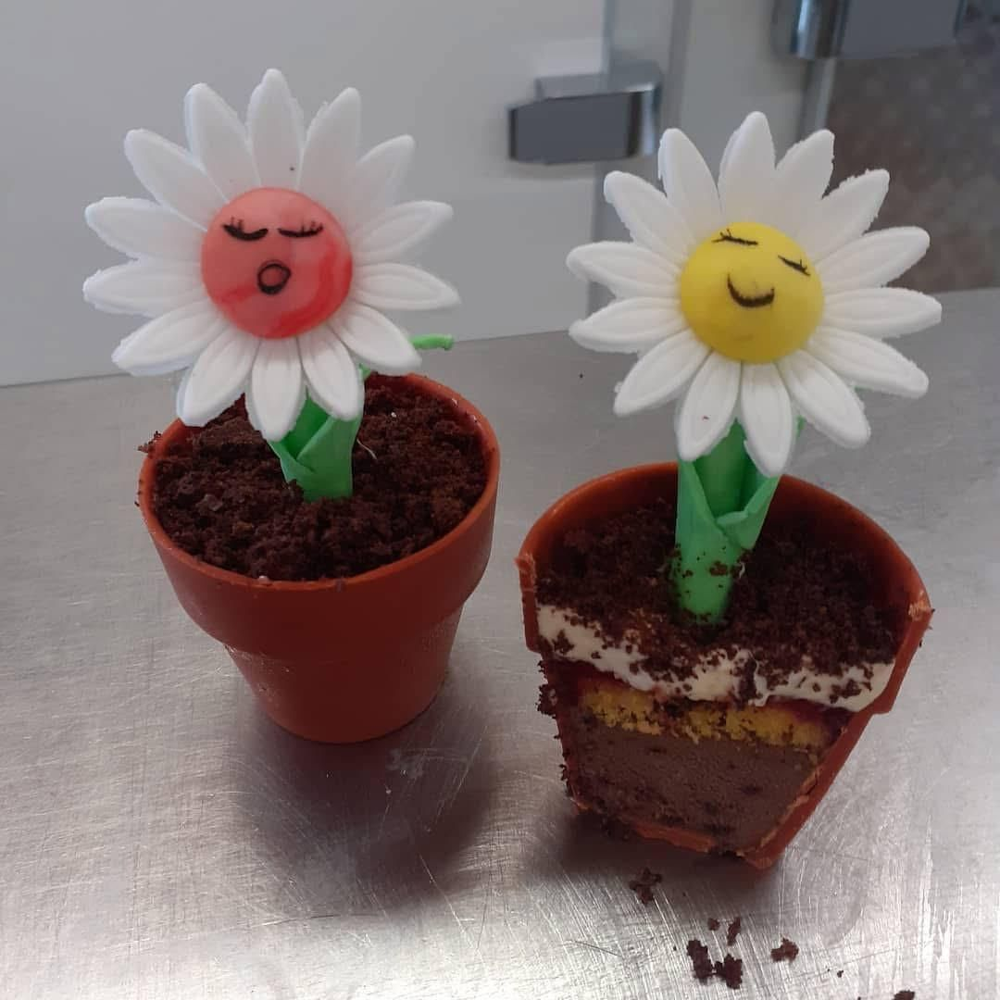
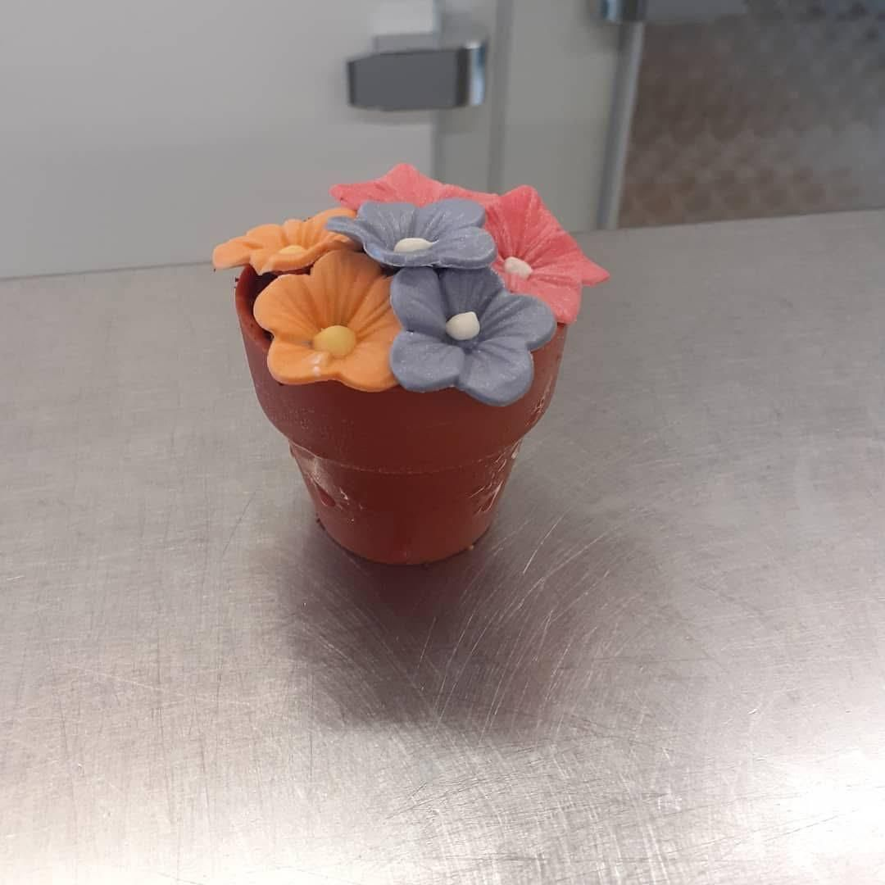
Parliamone